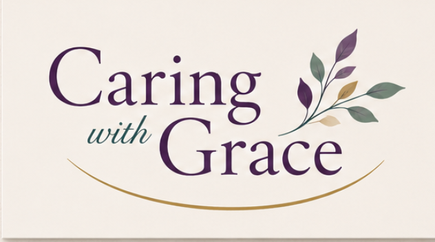
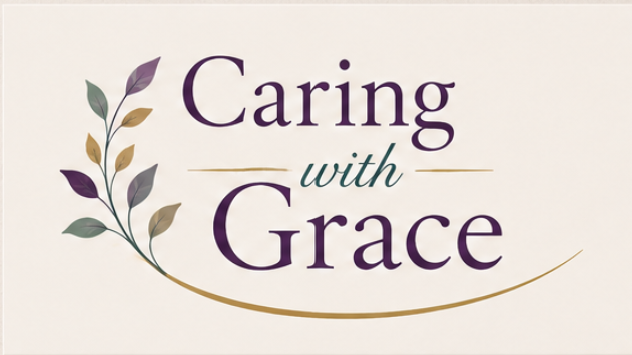
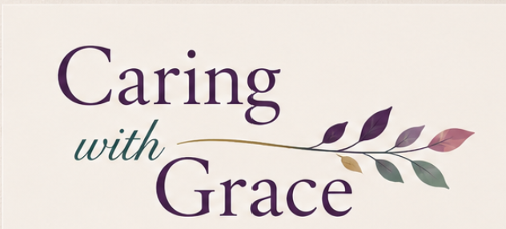
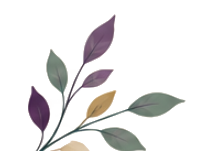
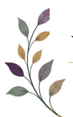
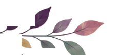

Three candidates from the team, followed by versions set in the website's script, and ten further explorations that vary the vines, leaves, and lettering. All colors drawn from the originals: plum, teal, sage, gold, mauve.
As shared by the team.



The identical three arrangements and sprigs, with the lettering in the script currently on the draft site.



Varying the vine and leaf drawing (all vector, drawn fresh) and the typography. B7 shows the direction in the website's current palette for comparison.